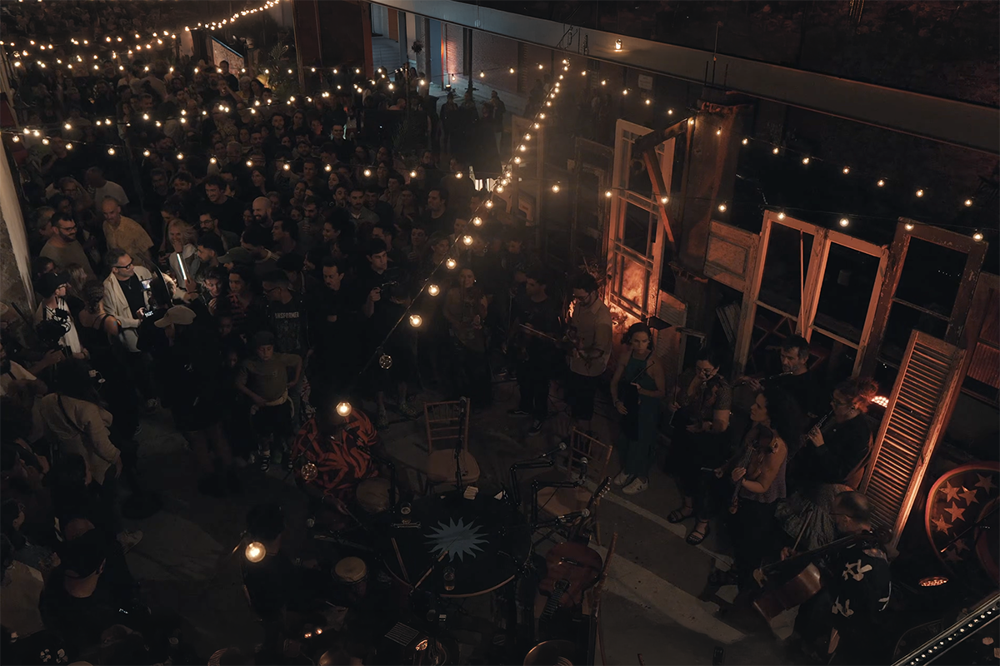
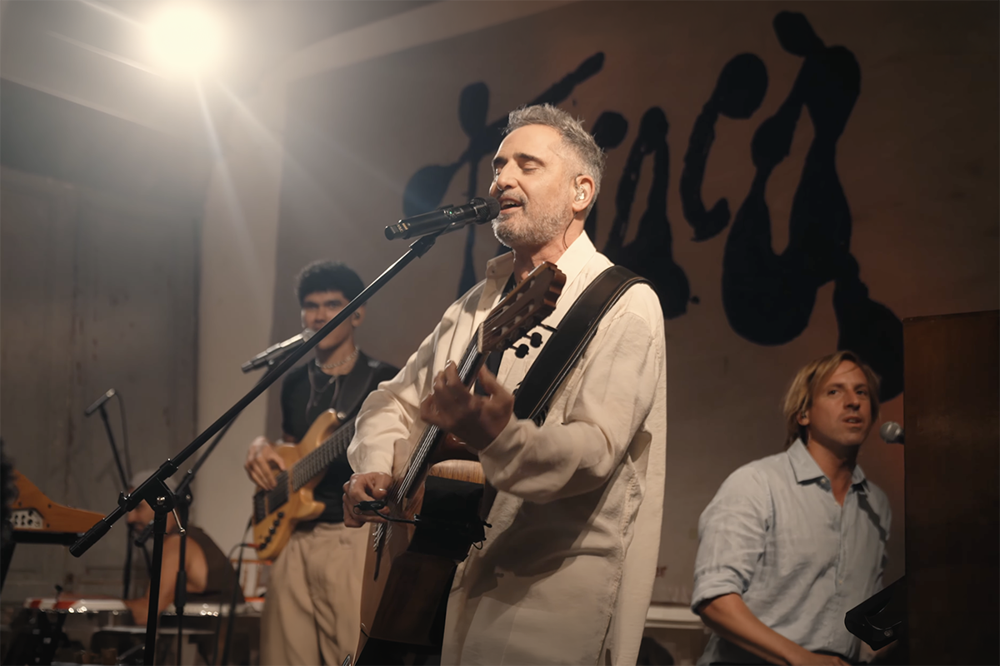

De Candombe y tradición: la gran apuesta de Jorge Drexler en su nuevo álbum
La entrada de Rueda de Candombe al universo Drexler
La entrada de Rueda de Candombe al universo Drexler

De cara a las presentaciones del cantautor uruguayo Jorge Drexler en Chile los próximos 25 y 26 de abril, importante es saber el contexto que permeó a su nuevo disco, Taracá (2026).
Más que una revisión exhaustiva a este complejo nuevo trabajo, el que recorre nuevos territorios sonoros e identitarios, buscaremos destacar uno de los puntos fundamentales que da vida a este álbum: la incorporación de la agrupación Rueda de Candombe al imaginario de Drexler.
Para ahondar en la importancia de este cruce musical, primero debemos explicar qué es el candombe, de dónde proviene y qué fue lo que hizo que Drexler pusiera el ojo en estos ritmos tan popularizados en Uruguay, a tal punto de volverse patrimonio cultural inmaterial de la humanidad por la UNESCO desde el 2009.
Si bien se entiende que Jorge Drexler abraza estos ritmos de toda la vida considerando que el cantautor es nacido y criado en Uruguay, para su álbum Taracá decidió hacer un homenaje claro a sus tierras grabando este disco en su natal país a pesar de vivir en Madrid. El cantante ha expresado que vuelve al país charrúa para envolverse con su identidad para álbumes que requieren de esa cualidad. Es que en esta pasada se marcan varios hitos personales para el cantante, el cual necesita volver a sus orígenes para reconectarse con él mismo: Drexler cumple 60 años y además homenajea a su fallecido padre, Günther Drexler.

Entonces, cabe preguntarse…
El candombe es una expresión afromusical que une la espiritualidad con el ritmo. A pesar de estar ligada principalmente a la danza, el candombe, tan apegado a los tambores tienen una impronta en la música y se utilizaban sobre todo en grandes fiestas religiosas para volver a las raíces africanas.
Y, de hecho, estas celebraciones se realizaban en un contexto patronal por allá por el siglo XVIII, donde los jefes permitían a sus esclavos poder celebrar sus tradiciones. Eran las costas de Montevideo donde ocurrían estos cánticos, lugar donde también conectaban con sus tierras autóctonas, teniendo al mar como testigo y fuente principal de inspiración.
Al día de hoy, el candombe es la música y el baile tradicional de Uruguay, la que actualmente se manifiesta de manera mucho más multitudinaria en la fiesta más grande de su capital: el Desfile de las Llamadas.
Volviendo a Rueda de Candombe, veamos qué hace de esta agrupación algo especial y qué fue lo que Drexler vio en ellos para incorporarlos en este proyecto musical tan personal.
Rueda de Candombe, como muchas otras agrupaciones, buscó perpetuar este estilo musical tradicional, aunque lo hizo de una manera que los terminó por distinguir de sus contrapartes. Pasa que el sexteto que compone Rueda de Candombe tomó inspiración de sus vecinos brasileños, de su orgullo por su música nacional y de su formato a la hora de interpretar la samba: a través de una mesa redonda, frente a frente a otro compañero, sin jerarquías y llevando la música desde la conexión e improvisación que viene natural con el cara a cara.
Esta forma de hacer música también se recepciona de manera distinta, porque el público envuelve al conjunto musical en un formato de 360°, lo que termina generando cercanía e intimidad entre el entorno y los músicos. Además, la lista de canciones es diversa, pasando por los clásicos del candombe y por otros trabajos algo más desconocidos.
Ellos mismos describen tocar en una mesa redonda como algo “innegociable” y es que, finalmente, esta característica es la que ha terminado por llevar esta propuesta más allá de lo esperable, llegando incluso a presentarse en otros países del globo. Es en esa lógica —más que en el sonido mismo que se presenta— donde Jorge Drexler encuentra un punto de conexión con su propio lenguaje artístico: uno que suele ser exploratorio tanto en lo lírico como en lo musical.
Hay una palabra clave en el nuevo álbum de Jorge Drexler, y es el de Geolocalización, concepto que se suele utilizar bastante en este mundo moderno y tan tremendamente digitalizado. Lo interesante es que Drexler toma la definición del término de una forma metafórica y literal: hacer música desde sus propias raíces charrúas, transformando su experiencia personal en un tributo a sus orígenes, ¿y qué mejor forma de hacerlo que con uno de los conjuntos más originales del candombe contemporáneo?
Más que incorporar el candombe como un elemento sonoro en la totalidad de su trabajo, Drexler parece apropiarse de su lógica, aquella que toma a la música como punto de encuentro, como diálogo y como construcción colectiva.
Y de hecho, va más lejos, hurgando en los estilos y géneros que juegan de frente con el candombe uruguayo de la Rueda, porque no solamente podemos escuchar este estilo plasmado en tracks como El Tambor Viejo,sino que también se entiende la influencia distinta en la samba que escuchamos en su adaptación en español del clásico brasileño O Que É, O Que É? de Gonzaguinha, que acá se titula ¿Qué será que es?, y que se acompaña de un vídeo musical tremendamente nostálgico y personal.

De todas maneras, creo que es imprescindible darle una oída completa a este álbum, corto, pero con una profundidad palpable.
Como se comentó en un principio, Jorge Drexler se presentará con dos shows en el Movistar Arena los próximos 25 y 26 de abril y todavía puedes encontrar entradas a través del sitio web del recinto o directamente en Puntoticket.
 Cultura
CulturaSé que suena raro hablar de calor extremo mientras en Chile todos están buscando la parka más gruesa del clóset.
 Cultura
CulturaEl hecho de que estemos entrando al mes de julio no se puede creer. Pero lo que tampoco se puede creer es la cantidad de artistas que han…
 Cultura
CulturaCuando hablamos de trabajos clásicos de la música chilena, siempre se nombran los discos de Violeta Parra, Víctor Jara, Los Jaivas o…